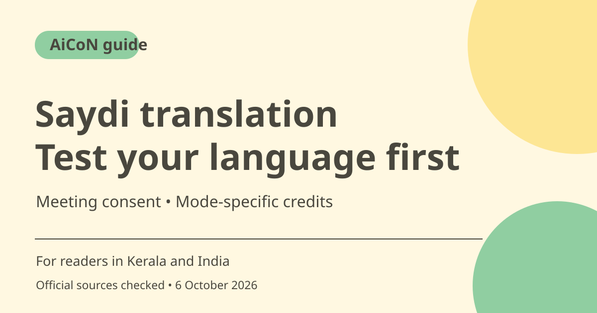

Saydi meeting translation: language tests, credits and privacy
Saydi advertises real-time transcription and translation through an app and meeting extension. Its prices and credits depend on the mode and plan, so a headline about ten hours is not a guarantee for every voice-translation task. Get meeting consent and test your actual language pair before relying on it.

What does Saydi offer?
The official homepage describes speech-to-text, one-way translation and two-way conversation, with speaker attribution and support for more than 60 languages. It lists a Chrome extension for web-based Google Meet, Zoom and Teams alongside web/mobile access. These are vendor claims, not an independent quality test of every meeting platform or language here.
Useful tests for Kerala readers
Test the exact language pair, accent and vocabulary used in your meetings. Malayalam availability and quality should be checked in the product rather than inferred from a 60-plus headline. Try a short, non-sensitive sample with known meaning and compare names, numbers and technical terms. Keep a person able to correct important errors.
Do not confuse transcription and translation minutes
The terms describe distinct STT, one-way and two-way credit types. The homepage advertises from US$9 for ten hours, about ~₹868 at a rough ~₹96.43/USD estimate, but that headline does not establish ten hours of every mode. Confirm which task consumes which balance and how voice-to-voice differs before paying.
Plan and top-up rules
The terms say monthly credits reset, unused amounts do not roll over unless the plan says so, and top-up credits do not expire. The pricing page says top-ups can be purchased with an active Pro or Team membership, while remaining top-ups can stay after cancellation. The checked pages do not provide a single, fully matched plan/mode table, so review actual checkout and renewal terms.
Meeting privacy and consent
The terms prohibit recording or transcribing without proper consent from all parties. The privacy policy says voice input is sent to third-party AI providers such as Deepgram and Google. It states raw audio is not permanently stored, but that is the vendor's policy claim and does not mean no transcript or account data exists. Get organisational approval before processing confidential meetings.
Accuracy and important decisions
Saydi's terms warn of errors and say it should not be the sole source for critical legal or medical use. Review important quotes, dates, money amounts and action items with participants. A fluent translation can still have the wrong meaning. Use human interpretation when the consequences of a mistake require it.
How to use it, step by step
- Open saydi.ai and check the supported device, meeting route and language pair you need.
- Read privacy and terms, then obtain proper participant consent and any workplace approval.
- Choose transcription, one-way translation or two-way conversation deliberately.
- Use a short non-sensitive sample and compare the output with a known transcript or bilingual reviewer.
- Check the mode-specific credit balance, expiry/reset and top-up rules before buying a plan.
- During a real meeting, verify names, numbers and important decisions rather than treating live text as exact.
- Review saved transcripts and account controls after use. Use a human fallback for critical communication.
Cost, eligibility and limits
| Advertised entry | Homepage says from US$9 for ten hours, about ~₹868 at editorial ~₹96.43/USD. Mode entitlement not established by that headline. |
|---|---|
| Monthly credits | Reset each billing period; rollover only where the plan specifies. |
| Top-ups | Pricing page says no expiry, with active Pro/Team membership needed to buy. Current checkout rules need review. |
| Privacy/accuracy | Participant consent required by terms. Remote providers process voice; important results need verification. |
Frequently asked questions
Does ten hours mean ten hours of every feature?
Not established. Credits and costs vary by transcription or translation mode.
Can I record colleagues without asking?
The terms require proper consent from all parties; workplace rules also matter.
Can I rely on it for legal or medical translation?
Its terms say not to use it as the sole source for critical applications. Use qualified human help.
Official sources
- PTI 6 October exchange-rate report used for rough INR estimates
- Official features
- Pricing and top-ups
- Terms and credit modes
- Privacy and providers
Checked 6 October 2026. Features and prices can change. This is a guide, not a personal product test.